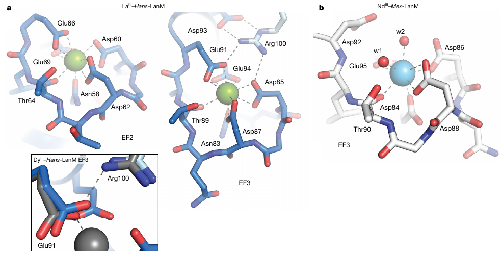

先认识 LanM
Lanmodulin 是镧系结合蛋白。EF-hand 是由螺旋夹持的富羧酸盐结合环；金属结合会让原本较无序的蛋白质更有序。
Hans-LanM 把金属配位的变化传递到另一条蛋白链。一个跨链氢键网络，让“识别哪种稀土”与“是否形成二聚体”相互耦合。
Enhanced rare-earth separation with a metal-sensitive lanmodulin dimer
Mattocks et al. · Nature 618, 87–93 · 31 May 2023
三项数值来自不同实验：Fig. 1 / SI Table S2；Methods / SI Fig. S8；Fig. 4d。
稀土离子的 +3 价态相同、尺寸相近。难点是把很小的局部差异变成足够大的分离差异。
Lanmodulin 是镧系结合蛋白。EF-hand 是由螺旋夹持的富羧酸盐结合环；金属结合会让原本较无序的蛋白质更有序。
作者筛得 696 条候选 LanM 序列，选择与经典 Mex-LanM 仅约 33% 序列相同的 Hans-LanM。它来自橡树芽中分离的细菌 Hansschlegelia quercus。
Mex-LanM 保持单体；Hans-LanM 的两条链可首尾相接。第二条链贡献的 Arg100 靠近第一条链的 EF3，让局部配位与整体组装联动。
正文 pp. 87–90；Fig. 1a–b、Fig. 2b–d。EF1–3 是主要高亲和位点，不应把四个 EF-hand 等同为四个相同强位点。
切换 La³⁺ 与 Dy³⁺，再逐层查看配位、氢键和二聚化。示意图展示作者的结构解释，不是原子运动轨迹。
图示可在框内横向滚动。
Arg100 由另一条链贡献，与 EF3 的 Asp85、Glu91 及 Asp93 构成网络。La 结构中 Glu91 双齿结合；较小的 Dy 使它转为单齿，Arg100 与其近端氧的距离由 2.9 Å 增至 3.2 Å。结构与溶液实验共同支持这一耦合机制，但静态晶体结构本身不直接给出溶液中的二聚比例。
R100K 保留碱性侧链，却显著削弱二聚化。SEC–MALS 观察到约 10–13 kDa、接近单体的分子量；La 的表观金属解离常数变为 120 ± 10 pM，Nd 和 Dy 则分别为 99 ± 7 pM 与 2,700 ± 400 pM。突变影响最明显的是 La，而不是所有稀土同等下降。
Fig. 2–3；SI Fig. S21–S23、S27；SI Table S7–S8。R100K 结合常数误差为 s.e.m.，La n=3，Nd/Dy n=2。本示意中的连线与距离不按比例。
金属结合的 Kd,app 用 pM–nM 描述；蛋白二聚化的 Kdimer 用 µM 描述。它们测量不同的平衡。
下图用对数横轴比较野生型表观金属亲和力。Kd 越小，所需自由金属浓度越低；图中不是吸附容量。
图表可在框内横向滚动。
SI Table S2：15 µM 蛋白单体当量，25 °C，20 mM 乙酸盐、100 mM KCl，pH 5.0；3 次独立滴定拟合，均值 ± s.e.m.。
圆二色光谱（CD）追踪 222 nm 的螺旋信号。La 与 Nd 的响应较协同；Dy 响应较弱，至少一个位点在竞争螯合剂条件下很弱。因此“表观 Kd”不等于每个 EF-hand 的独立微观结合常数。
Ca²⁺ 的 Kd,app 为 60 ± 10 µM。这里比较的是金属诱导构象响应，不能把 Hill 系数当作金属结合数。
La–Hans-LanM 的 EF1–3 都为十配位，第一配位层完全由蛋白质提供；Dy 对应位点为九配位。Nd–Mex-LanM 的 EF1–3 为九配位并含两分子配位水。Eu–Hans-LanM 的发光实验给出 q≈0.11，支持缺少内层水。不同金属、不同蛋白之间的结构比较并不是同一蛋白的完整全镧系结构系列。
拖动总蛋白浓度，查看单体–二聚体质量作用关系。这里计算的是蛋白链处于二聚体中的比例。
D 表示二聚体、M 表示单体，均为蛋白质物种；此处 D 与下一节的金属分配因子 D 含义不同。假设金属结合态固定、达到理想溶液二聚平衡。
图表可在框内横向滚动。
野生型：Dy Kdimer = 60 ± 30 µM；无金属 = 117 ± 21 µM（均值 ± s.d.，n=3）。ITC：30 °C、pH 7.0、30 mM MOPS、100 mM KCl。La <0.4 µM 为上界，非精确拟合值。曲线未传播参数不确定性。
3 mM 只是把论文所述柱上蛋白量级放入溶液公式做比较。固定化需要两条链在空间上相遇；本模型没有表面几何、混合金属或传质，不能预测真实柱上的二聚比例、纯度或回收率。
作者无法从 La 结合态的稀释 ITC 中拟合二聚化参数；结合 SEC–MALS 与可检测单体比例的假设，给出 Kdimer <0.4 µM。教学曲线取 0.4 µM 这一边界。实际 K 更小时，同一蛋白浓度下二聚比例更高，因此曲线是理想模型下的保守下界。
相同的 95:5 Nd/Dy 模型进料，单级柱分离并不等于一次平衡吸附。分步洗脱决定如何收集两种产品。
通过 C 端 Cys 与马来酰亚胺功能化琼脂糖连接；野生型约结合 1 当量稀土，R100K 约 2 当量。
模型二元体系；论文将柱加载至突破容量的约 90%。这不是未经处理的真实电子废物浸出液。
pH 5.0，以 30 → 50 → 90 mM 丙二酸盐分步竞争洗脱。
随后使用 pH 1.5 HCl 完全解吸。R100K 的一个床体积为 0.7 mL。
纯度：目标元素占收集产品中 Nd + Dy 的比例。回收率：回收到该产品中的目标元素占其进料量的比例。两者分母不同。
削弱二聚化的 R100K 反而改善柱性能。作者认为，在该固定化密度下，只有少数蛋白可能形成有效二聚体；更高的有效结合计量与不同的柱上选择性也影响结果。论文证明可用结构信息改造分离剂，但没有证明柱上的优势来自更强二聚化。
二元 Nd/Dy 平衡实验（pH 5.0，进料 Nd 1.42 ± 0.04 mM、Dy 1.62 ± 0.32 mM）给出 SFNd/Dy：野生型 8.12 ± 0.40，R100K 12.7 ± 1.3。SF = DNd / DDy，D 为固定相与液相之间的金属分配因子。它与 95:5 进料分步洗脱实验不同，不能直接当作产品纯度。
Fig. 4d；Extended Data Fig. 6、Table 3；SI Fig. S31；正文 p. 92。柱产品数值是所报告实验结果，图中未给重复实验误差，页面未添加误差条。
结构解释、溶液测量、固定化工艺是三个层次。原图阅读器帮助定位每一层证据。

© Mattocks et al. 2023 · CC BY 4.0 · 由用户提供的正式论文裁切，保留图内原色与英文标签，仅移除周围正文和原图注。手机端可在图框内横向滚动。
从蛋白质得到的设计原则，可以启发材料研究；把它移植到 MOF 或工业流程仍需要新的证据。
结构、ITC、SEC–MALS、SAXS 与突变共同支持稀土敏感二聚化。Dy 在晶体中出现二聚结构，不意味着它在所有溶液浓度下都是稳定二聚体。
结果针对 Nd/Dy 模型进料和给定丙二酸盐梯度。未在本实验中证明全镧系相邻元素的普适单级分离，也未给出完整工业寿命、规模化成本或生命周期评价。
讲解者分析：可学习的不是照搬一种蛋白孔径，而是让第一配位层与可调的第二配位层、位点间协作相连接。固定化后应重新测量计量、竞争选择性与位点可达性。
联系：MOF 中的局部配位 →作者提出把两条单体连接在同一多肽链、调节界面相互作用并采用单点固定化。这里仍是未来方向；它能否把溶液中的二聚敏感性转化为可控柱性能，需要直接验证。
本页依据用户提供的 23 页正式论文 PDF（含 Methods、Extended Data 与报告表）和 56 页补充材料；证据记录逐条列出位置、实验条件、误差定义与讲解边界。
Joseph A. Mattocks, Jonathan J. Jung, Chi-Yun Lin, Ziye Dong, Neela H. Yennawar, Emily R. Featherston, Christina S. Kang-Yun, Timothy A. Hamilton, Dan M. Park, Amie K. Boal & Joseph A. Cotruvo Jr. Enhanced rare-earth separation with a metal-sensitive lanmodulin dimer. Nature 618, 87–93 (2023).
建议路线：入门先读机制与柱分离；研究阅读再看表观亲和力、二聚平衡的假设，以及原图与补充表。所有教学图与计算均有明确标识。